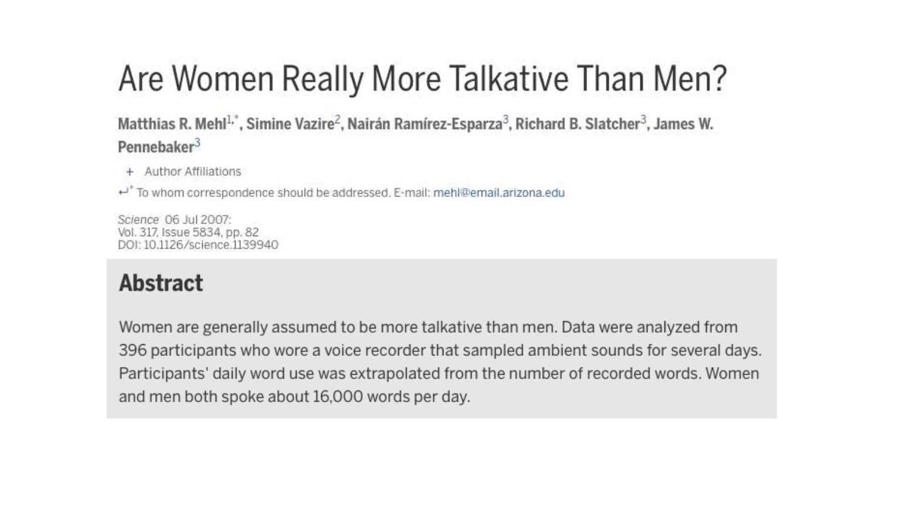

2.3 Tilastojen yleisestä roolista yhteiskunnassa
- Ihminen ei voi toimia maailmassa järkevästi, ellei hän pysty muodostamaan oikeata kuvaa maailmasta ja sen tilasta. Nykyaikana oikeaa kuvaa varten tarvitaan maailmaa ja sen tilaa merkityksellisesti ja oikein kuvaavia, ajantasaisia (tilasto)tietoja.
- Yhteiskunnan kaikilla sektoreilla toiminnan seuranta, päätöksenteko ja ennakointi perustuvat eri sektoreita kuvaaviin (tilasto)tietoihin ja niiden analysoinnissa käytettäviin tilastollisiin menetelmiin.
- Oikein todellisuutta kuvaavat, ajantasaiset (tilasto)tiedot ovat välttämättömiä modernin yhteiskunnan toiminnalle.
- Esim. päätöksenteko sekä julkisella että yksityisellä sektorilla (elinkeinoelämässä) perustuu pitkälti yhteiskuntaa ja elinkeinoelämää kuvaaviin (tilasto)tietoihin ja tilastollisten menetelmien tuottamiin tuloksiin sekä niiden perusteella tehtäviin päätöksiin. Esimerkkejä ovat esim. tietyt konkreettiset (talous)poliittiset toimenpiteet (talous)tilastojen perusteella. Lisäksi tuotantoprosessien ohjaus ja laadunvalvonta teollisuudessa sekä markkinatutkimus kaupan alalla perustuvat tilastollisiin menetelmiin.
- (Tilasto)tietojen saatavuutta voidaan pitää jopa toimivan demokratian edellytyksenä.
- Koska todellisuutta kuvaaviin (tilasto)tietoihin sisältyy (lähes) aina epävarmuutta ja satunnaisuutta, tilastotiede ja tilastolliset menetelmät luovat perustan tilastojen tuotannolle, jalostukselle ja analysoinnille.
- Niinpä tilastojen tuotannon, jalostuksen ja analysoinnin menetelmien kehittäminen on keskeinen osa tilastotieteen tehtäväkenttää.
- Samoin tilastotieteen menetelmien ymmärtämisellä on keskeinen rooli tietoyhteiskunnassa toimimisessa ja vaikuttamisessa.
Esimerkki (väite): Naiset puhuvat enemmän kuin miehet.
- Lähtökohta väitteen (hypoteesin) tutkimiseen:
- Uskomus on väärä kunnes toisin todistetaan.
- Lähdetään liikkeelle olettamuksesta, että miehet ja naiset puhuvat yhtä paljon.
- Olettamuksen tueksi tai kumoamiseksi täytyy kerätä todistusaineistoa
- Jotta tutkimukseen saataisiin täysin varma vastaus, kaikki miesten ja. naisten puheet ihmiskunnan olemassa olon ajalta pitäisi pystyä laskemaan = mahdotonta.
- Mitä siis tehdä?
- Täytyy tyytyä tutkimaan osajoukkoja miehistä ja naisista (otos), mihin tarvitaan otantamenetelmiä (käsitellään tarkemmin myöhemmin luvussa ??).
- Arvotaan satunnaisesti tutkimushenkilöitä miesten ja naisten joukosta ja mitataan kuinka paljon he puhuvat.
- Satunnaisuus tärkeää, sillä jos valikoitaisiin tarkoituksella puheliaita tai vähäsanaisia tutkimushenkilöitä, tulokset vääristyisivät.
- Jokaiseen mittaukseen liittyy virhe.
- Täysin satunnainenkaan otos ei edusta täydellisesti koko väestöä. Joukkoon saattaa valikoitua puhtaasti sattumaltakin poikkeuksellisen puheliaita tai harvasanaisia naisia tai miehiä.
- Millaisia sekoittavia tekijöitä tulee mieleen? Mitkä seikat voisivat vaikuttaa tutkittavaan asiaan?
- Tosin mitä suurempi otos, sitä pienemmäksi sattuman osuus käy ja joudutaan turvautumaan todennäköisyyksiin: Kun aineisto on kerätty, halutaan tietää kuinka todennäkoistä on, että uskomus pitää paikkaansa.
- Palataan takaisin esimerkkiimme: Yleisen uskomuksen mukaan naiset puhuvat kolme kertaa enemmän kuin miehet.
- Tutkimuksen mukaan miehet vaikuttavat kuitenkin puhuvan yhtä paljon kuin naisetkin.
- Laajemmat tutkimukset osoittavat, että tilanteella on puheen määrään paljon suurempi vaikutus kuin sukupuolella.
- Kiitos tilastotieteen, väärä uskomus on korvautunut tiedolla!

Kuvio 2.2: Are women really more talkative than men?